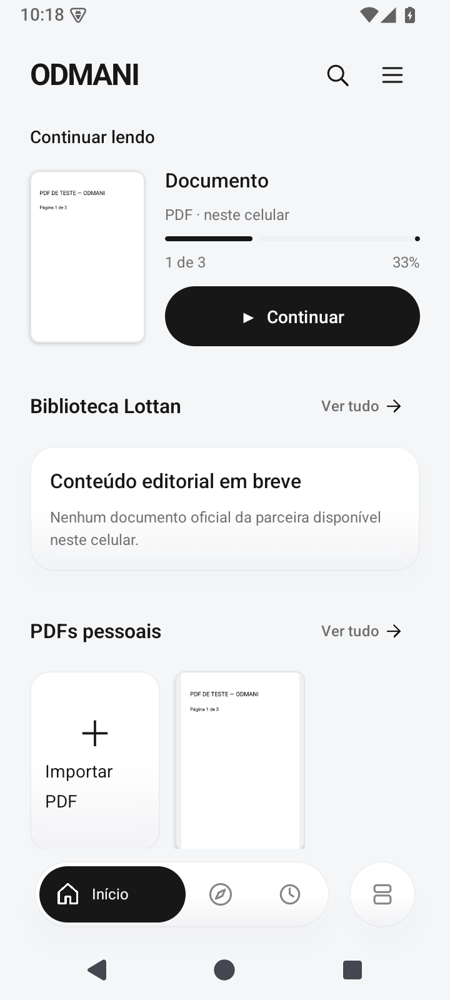
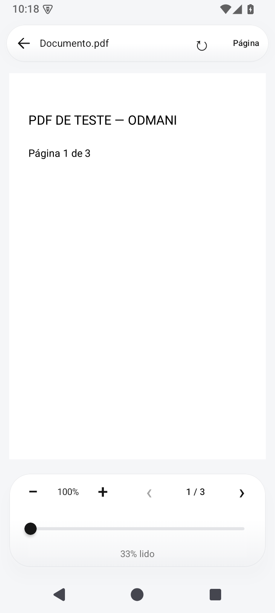
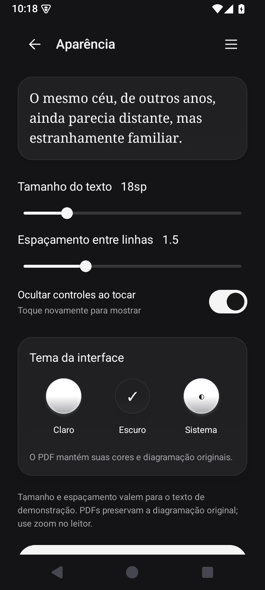

O PDF, como ele é.
Capas e páginas originais, zoom, rotação e ajuste à tela. A interface muda de tema; o conteúdo mantém suas cores.
UM PRODUTO AUDMANI
Seus livros e documentos em uma experiência de leitura intuitiva, organizada e sem distrações.
Conheça a versão AndroidDesenvolvido pela AUDMANI · Android nativo
MENOS DISTRAÇÃO. MAIS LEITURA.
A interface dá espaço ao documento. Tons de cinza, superfícies suaves e controles discretos acompanham sua leitura do primeiro ao último capítulo.
Importe um PDF do celular, organize em pastas e categorias e retome da página em que parou. Os arquivos ficam disponíveis offline no aplicativo.
FEITO PARA O ESSENCIAL
Capas e páginas originais, zoom, rotação e ajuste à tela. A interface muda de tema; o conteúdo mantém suas cores.
Importação pelo seletor do Android, pesquisa pelo nome e organização em pastas e categorias virtuais.
Posição salva e progresso por documento. Uma leitura concluída continua registrada quando você começa novamente.
Tempo registrado com o leitor em primeiro plano, páginas visitadas, barras semanais e mapa de atividade.
Contraste e controles consistentes nos dois temas. Ajustes de página preservam a composição original do PDF.
Sem conta ou anúncios. A versão nativa atual não solicita acesso à internet e guarda seus PDFs no próprio celular.
CAPTURAS REAIS DO APLICATIVO
Telas do APK validado no Android 15. O documento exibido é um PDF de teste, sem conteúdo editorial fictício.




BIBLIOTECA & PARCERIAS
A Lottan é parceira de conteúdo editorial. A criação e o desenvolvimento da ODMANI são da AUDMANI. A biblioteca editorial só exibirá conteúdo com origem verificada; seus PDFs pessoais ficam em uma seção própria.
ODMANI PARA ANDROID
Soft UI 2.0 · 2.2.0-softui01 · código 5
Android 8 ou posterior · 11,24 MB
Versão Debug para testar no celular. Ao abrir o arquivo, autorize a instalação por este navegador se o Android solicitar. Atualizações exigem assinatura compatível; evite desinstalar para preservar seus PDFs.
SHA-256:
8526752196f8ab5ed9a4a631cba00841d8dd75d5a5ff4e83f9f5d6127546beeaBaixar checksum · 13 testes unitários e 6 instrumentados aprovados no Android 15.
Baixe o APK de teste no seu Android, abra o arquivo e siga as instruções do sistema. O Android poderá pedir autorização para instalar pelo navegador. Para atualizar, use a mesma assinatura do aplicativo instalado e evite desinstalá-lo para preservar seus dados locais.